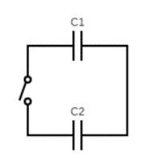
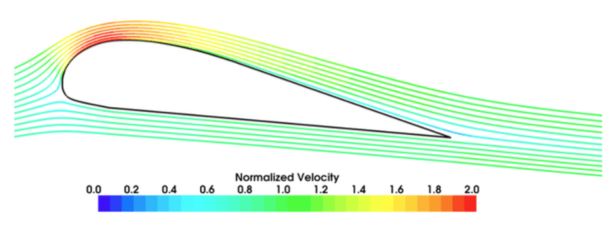
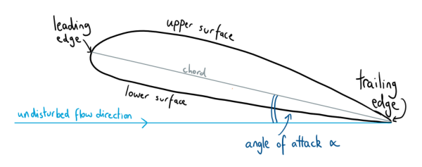
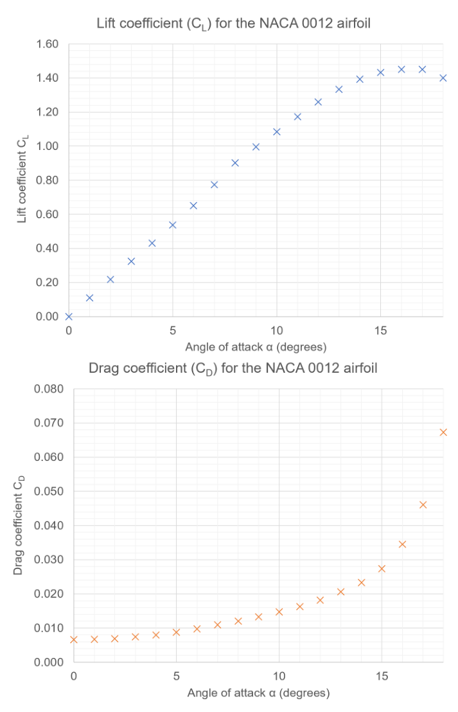
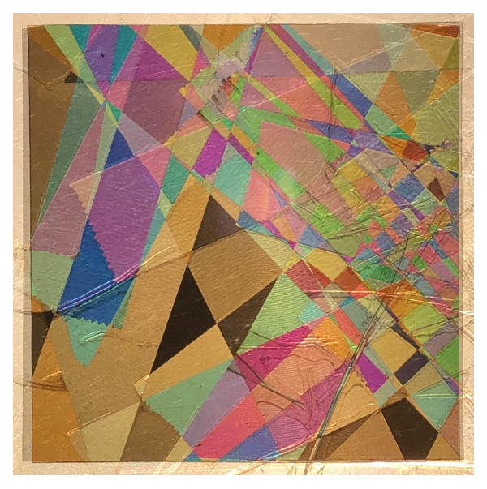
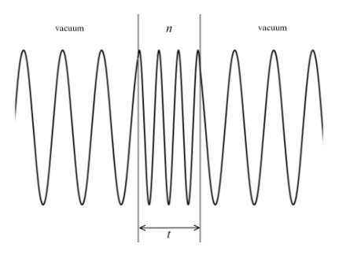
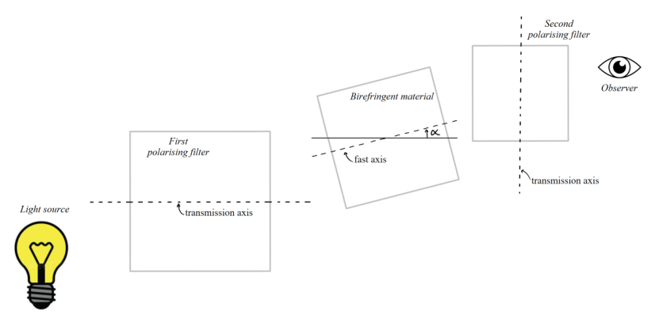
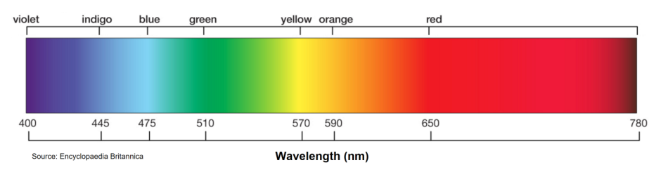
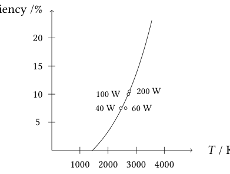

Qu 1. General Questions
(a) An aircraft is moving around the Earth at 900 km/h in clear daytime conditions. The pilot maintains a course of constant latitude and contrary to the Earth’s rotation direction. Determine the latitude at which the pilot observes the Sun to remain in a fixed position in the sky. The equator is at zero latitude and the North pole at 90°.
(b) A bucket of water is tipped out quickly from the top of a tall tower. It arrives at the ground as droplets in the form of rain. Give an explanation for this effect.
(c) Capacitor has a capacitance 6.0 µF and capacitor has a capacitance 12.0 µF. is charged in a circuit with an emf of 12.0 V, whilst is initially charged with an emf of 6.0 V. The two capacitors are then put into a single loop circuit with an open switch, with the same polarities connected together. This is shown in Fig. 1. The switch is then closed, and an equilibrium state is reached.
(i) What is the final pd across ?
(ii) What fraction of the original energy stored in the capacitors has been dissipated as heat in the wires?
(d) Three particles of equal mass are free to move under their mutual gravitational interactions. The particles occupy the same fixed circular orbit of radius , and remain equally spaced throughout the motion. Calculate the orbital period of the system.
(e) The current through a semiconductor thermistor is measured at a variety of temperatures. The current is given by where is in kelvin, is the Boltzmann constant, and is the band gap energy in the semiconductor. At 90°C the current is 10.90 mA and at 60°C it is 3.97 mA.
(i) Find the value of (in eV)
(ii) Find the current when is very large

Fig. 1: two capacitors in single loop circuitTopic: Newtonian Mechanics, Circuits, Gravitation Metodi: Kinematic Equations, Equivalent Circuit Reduction, Newton’s Law of Gravitation Competenze: Physical Reasoning, Mathematical Modeling Objects: Capacitor, Switch, Wire, Planet, Droplet Fonte: Testo (PDF) — p.3
Qu 1. Domande generali
**a) ** Un aereo si sta muovendo intorno alla Terra a 900 km/h in condizioni di giorno chiare. Il pilota mantiene un percorso di latitudine costante e contrario alla direzione di rotazione della Terra. Determina la latitudine a cui il pilota osserva il Sole per rimanere in una posizione fissa nel cielo. L’equatore è a latitudine zero e il polo nord a 90°.
Un secchio di acqua viene spinto rapidamente dalla cima di una torre alta. Arriva al suolo sotto forma di gocce di pioggia. Spiega questo effetto.
**(c) ** Il condensatore ha una capacità di 6,0 μF e il condensatore ha una capacità di 12,0 μF. Il è caricato in un circuito con un’emf di 12,0 V, mentre è inizialmente caricato con un’emf di 6,0 V. I due condensatori vengono quindi inseriti in un singolo circuito a circuito con uno switch aperto, con le stesse polarità collegate tra loro. Questo è mostrato nella figura. 1. Il switch viene quindi chiuso e raggiunge uno stato di equilibrio.
(i) Qual è il pd finale di ?
(ii) Quale frazione dell’energia originale immagazzinata nei condensatori è stata dissipata come calore nei fili?
**(d) ** Tre particelle di massa uguale sono libere di muoversi sotto le loro interazioni gravitazionali reciproche. Le particelle occupano la stessa orbita circolare fissa di raggio e restano spaziate uniformemente durante il movimento. Calcolare il periodo orbitale del sistema.
**(e) ** La corrente attraverso un termistor semiconduttore viene misurata a diverse temperature. La corrente è data da dove è in kelvin, è la costante di Boltzmann e è l’energia di intervallo di banda nel semiconduttore. Al 90°C la corrente è di 10,90 mA e al 60°C è di 3,97 mA.
(i) Trova il valore di (in eV)
(ii) Trova la corrente quando è molto grande
Fig. 1: due condensatori in circuito a singolo circuito
Topic: Newtonian Mechanics, Circuits, Gravitation Metodi: Kinematic Equations, Equivalent Circuit Reduction, Newton’s Law of Gravitation Competenze: Physical Reasoning, Mathematical Modeling Objects: Capacitor, Switch, Wire, Planet, Droplet Fonte: Testo (PDF) — p.3
Qu 2. The Physics of Flight
Bernoulli’s principle for incompressible and inviscid (zero viscosity) fluids states that
throughout the flow, where is the fluid density, the fluid speed and the fluid pressure.
(a) In normal operational flight, air flows over the upper surface of an aircraft wing faster than the bottom surface, as shown in Fig. 2. Use Bernoulli’s principle to explain how this generates lift and drag forces on the wing.
(b) Shortly after take-off the A380 is moving at 90 m s with the wings at an angle of attack of 15°. Determine the vertical acceleration of the A380. Take the air density at sea-level to be 1.3 kg m and use data from Fig. 4. Suggest how this vertical acceleration is experienced by a passenger.
The lift force and drag force on an aircraft can be well modelled by
where is the wing area, is the air density and is the speed of the aircraft relative to still air. The lift coefficient and drag coefficient both depend upon the wing shape and the angle of attack , which is the angle the wing makes to the undisturbed air-flow direction. Typical data for the lift and drag coefficients are shown in Fig. 4. The Airbus A380 has a wing area m² and take-off mass kg.
(c) At a higher altitude the air density has dropped to 0.80 kg m. With an angle of attack of 8°, the A380 flies at constant speed and constant altitude (steady and level flight). Determine the engine thrust and speed of the aircraft, and hence the useful power developed by the A380 jet engines.
(d) At its cruising altitude of 11,000 m the A380 flies at a steady speed of 250 m s. The air density at this height is 0.36 kg m. Estimate the necessary angle of attack and the useful power developed by the engines.
(e) An A380 is in steady and level flight. Explain, without calculation, why the drag force can be expected to be large for both very small and very large angles of attack.
(f) Use data from Fig. 4 to estimate the angle of attack that minimises the drag for an A380 in steady and level flight. Suggest the importance to airline companies in knowing this value.

Fig. 2: air flow over aircraft wing
Fig. 3: angle of attack α definition
Fig. 4: CL and CD vs angle of attack αTopic: Fluid Mechanics, Newtonian Mechanics Metodi: Bernoulli’s Equation, Free-Body Diagram, Physical Modeling Competenze: Physical Reasoning, Mathematical Modeling Objects: — Fonte: Testo (PDF) — p.4
Qu 2. The Physics of Flight
Il principio di Bernoulli per i fluidi incompressibili e invisci (viscosità zero) afferma che
durante il flusso, dove è la densità del fluido, la velocità del fluido e la pressione del fluido.
**(a) ** Nel volo operativo normale, l’aria scorre sopra la superficie superiore dell’ala di un aeromobile più velocemente della superficie inferiore, come mostrato nella figura. 2. Usa il principio di Bernoulli per spiegare come questo genera forze di sollevamento e trazione sull’ala.
**(b) ** Poco dopo il decollo l’A380 si muove a 90 m s con le ali ad un angolo di attacco di 15°. Determina l’accelerazione verticale dell’A380. Prendiamo la densità dell’aria a livello del mare a 1,3 kg m e usiamo i dati di cui alla figura. 4. Suggerisci come un passeggero possa sperimentare questa accelerazione verticale.
La forza di sollevamento e la forza di trazione su un aeromobile possono essere ben modellate da
se è l’area delle ali, è la densità dell’aria e è la velocità dell’aeromobile rispetto all’aria fermata. Il coefficiente di sollevamento e il coefficiente di trazione dipendono entrambi dalla forma dell’ala e dall’angolo di attacco , che è l’angolo che l’ala fa verso la direzione del flusso d’aria non disturbata. I dati tipici per i coefficienti di sollevamento e di trazione sono riportati nella figura. 4. L’Airbus A380 ha una superficie delle ali m2 e una massa di decollo kg.
**(c) ** A un’altitudine più alta la densità dell’aria è scesa a 0,80 kg m . Con un angolo di attacco di 8°, l’A380 vola a velocità costante e a quota costante (volo costante e a livello). Determinare la spinta del motore e la velocità dell’aeromobile, e quindi la potenza utile sviluppata dai motori a reazione A380.
(d) At its cruising altitude of 11,000 m the A380 flies at a steady speed of 250 m s. La densità dell’aria a questa altezza è di 0,36 kg m. Estimare l’angolo di attacco necessario e la potenza utile sviluppata dai motori.
(e) An A380 is in steady and level flight. Spiegate, senza calcolo, perché si possa aspettarsi che la forza di trazione sia grande sia per angoli di attacco molto piccoli che molto grandi.
**(f) ** Utilizzi i dati della figura. 4 per stimare l’angolo di attacco che riduce al minimo la resistenza di un A380 in volo stabile e a livello. Suggerire l’importanza per le compagnie aeree di conoscere questo valore.
Fig. 2: flusso d’aria sopra le ali dell’aeromobile
Fig. 3: angolo di attacco definizione α
Fig. 4: CL e CD contro angolo di attacco α
Topic: Fluid Mechanics, Newtonian Mechanics Metodi: Bernoulli’s Equation, Free-Body Diagram, Physical Modeling Competenze: Physical Reasoning, Mathematical Modeling Objects: — Fonte: Testo (PDF) — p.4
Qu 3. Colourful transparent materials
This question explores the physics of the optical phenomenon demonstrated in Figure 5 (strips of cellotape sandwiched between two crossed polarisation filters).
(a) Explain why any source of light appears black when viewed through polarisation filters that are crossed, i.e., when the transmission axes of the filters are mutually perpendicular.
(b) Consider a transparent material of thickness and refractive index , shown schematically in Figure 6. If light of vacuum wavelength strikes the material at normal incidence, argue that the number of wavelengths that occupy the material is
(c) Assuming normal incidence, use Eq. 4 to show that the phase difference between the fast and slow waves, as they emerge from a birefringent material of thickness , is given by
where .
Some optical materials display birefringence: the speed of propagation of light through the material depends upon the plane of polarisation. Let denote the refractive index for light polarised along the ‘fast’ axis, and for the ‘slow’ axis (). Birefringence values for selected materials:
| Material | Description | |
|---|---|---|
| Cellotape | Sticky tape | 0.0023 |
| Cellophane | Plastic wrap | 0.0110 |
| Calcite | Mineral | 0.1720 |
For incident unpolarised light of intensity , uniformly distributed in wavelength, a birefringent material sandwiched between two crossed polarisers transmits intensity
where is given by Eq. 5, and is the angle between the fast axis of the birefringent material and the transmission axis of the first polarising filter.
(d) State the angles at which the fast axis of the birefringent material can be set to maximise the transmitted intensity, and explain why there is no transmission when the fast or slow axes are aligned with the transmission axis of the first polarising filter.
(e) Consider two crossed polarising filters sandwiching a 30 µm layer of cellophane, with its fast axis set at 45° to the transmission axes of the polarising filters. Making note of Figure 8 and Table 1, sketch the transmitted intensity across all visible wavelengths. Clearly label your sketch with the letter E and suggest the apparent colour of such an arrangement.
(f) Now add to the same axes another sketch, labelled F, showing the transmitted intensity for a 90 µm sample of cellophane (again set at 45°). Suggest the apparent colour of such an arrangement.
(g) Suppose 10 µm of an unknown birefringent material is placed between crossed polarisers. The fast axis is not aligned with the transmission axes of the polarising filters. If the transmitted light is a stark green colour, with almost no blue or red, estimate the birefringence of this material.
(h) Reason why the transmitted light appears white when a very large thickness of birefringent material is used.
(i) With reference to their manufacture, suggest why polymers such as cellotape and cellophane display birefringent properties.
(j) Suggest, experimentally, how you could determine the thickness of a sample of cellophane.
(k) Consider a crystal of calcite placed between two crossed polarisers. Estimate the minimum number of atomic layers of calcite needed to observe colourful birefringent effects. Calcite has a density of 2.71 g cm and a molar mass of 100 g mol.

Fig. 5: cellotape strips between crossed polarisers
Fig. 6: wavelength compression in optical material
Fig. 7: schematic of experimental setup
Fig. 8: visible wavelength range 400–780 nmTopic: Wave Optics, Geometric Optics Metodi: Superposition Principle, Interference & Diffraction Analysis, Wave Equation Competenze: Physical Reasoning, Mathematical Modeling Objects: Photon Fonte: Testo (PDF) — p.7
Qu 3. Materiali trasparenti colorati
Questa domanda esplora la fisica del fenomeno ottico dimostrato nella figura 5 (stripe di cellotape inserite tra due filtri di polarizzazione incrociata).
**(a) ** Spiegare perché qualsiasi fonte di luce appare nera quando viene vista attraverso filtri di polarizzazione che sono incrociati, cioè quando gli assi di trasmissione dei filtri sono reciprocamente perpendicolari.
**(b) ** Considerare un materiale trasparente di spessore e indice di rifrazione , mostrato schematicamente nella figura 6. Se la luce di lunghezza d’onda del vuoto colpisce il materiale con una frequenza normale, si sostiene che il numero di lunghezza d’onda che occupano il materiale è
**(c) ** Supponendo una normale incidenza, utilizzare Eq. 4 per dimostrare che la differenza di fase tra le onde veloci e le onde lente, che emergono da un materiale bifringente di spessore , è data da
dove .
Alcuni materiali ottici mostrano una birefringenza: la velocità di propagazione della luce attraverso il materiale dipende dal piano di polarizzazione. Indicare l’indice di rifrazione per la luce polarizzata lungo l’asse “veloce” e per l’asse “lento” (). Valori di bifringenza per i materiali selezionati:
| Material | Description | |
|---|---|---|
| ♬ Cellotape ♬ Sticky tape ♬ 0.0023 ♬ | ||
| ♬ Cellophane ♬ Plastic wrap ♬ 0.0110 ♬ | ||
| ♬ Calcite ♬ Minerale ♬ 0.1720 ♬ |
Per la luce non polarizzata incidente di intensità , uniformemente distribuita nella lunghezza d’onda, un materiale bifringente inserito tra due polarizzatori incrociati trasmette l’intensità
dove è data da Eq. 5, e è l’angolo tra l’asse veloce del materiale bifringente e l’asse di trasmissione del primo filtro polarizzante.
**(d) ** Indicare gli angoli in cui l’asse veloce del materiale bifringente può essere impostato per massimizzare l’intensità trasmessa e spiegare perché non vi è trasmissione quando gli assi veloci o lenti sono allineati con l’asse di trasmissione del primo filtro polarizzante.
**(e) ** Si consideri due filtri polarizzanti incrociati che si uniscono con uno strato di cellophane da 30 μm, il cui asse rapido è fissato a 45° agli assi di trasmissione dei filtri polarizzanti. Tenendo conto della figura 8 e della tabella 1, esprimere l’intensità trasmessa in tutte le lunghezze d’onda visibili. Segnalare chiaramente il disegno con la lettera E e suggerire il colore apparente di tale disposizione.
**(f) ** Aggiungi ora agli stessi assi un altro bozzetto, etichettato F, che mostra l’intensità trasmessa per un campione di cellofano da 90 μm (riimpostato a 45°). Suggerire il colore apparente di tale disposizione.
**(g) ** Supponiamo che 10 μm di materiale bifringente sconosciuto sia collocato tra polarizzatori incrociati. L’asse veloce non è allineato con gli assi di trasmissione dei filtri polarizzatori. Se la luce trasmessa è di colore verde intenso, con quasi nessun blu o rosso, si stima la birefringenza di questo materiale.
**(h) ** La ragione per cui la luce trasmessa appare bianca quando viene utilizzato un materiale bifringente di spessore molto elevato.
(i) With reference to their manufacture, suggest why polymers such as cellotape and cellophane display birefringent properties.
**(j) ** Suggerire, sperimentalmente, come si potrebbe determinare lo spessore di un campione di cellofano.
**(k) ** Considera un cristallo di calcite posto tra due polarizzatori incrociati. Calcolare il numero minimo di strati atomici di calcite necessari per osservare gli effetti bifringenti colorati. La calcita ha una densità di 2,71 g cm e una massa molare di 100 g mol .
Fig. 5: strisce di cello tra i polarizzatori incrociati
Fig. 6: compressione della lunghezza d’onda in materiale ottico
Fig. 7: schema di impostazione sperimentale
Fig. 8: gamma di lunghezza d’onda visibile 400780 nm
Topic: Wave Optics, Geometric Optics Metodi: Superposition Principle, Interference & Diffraction Analysis, Wave Equation Competenze: Physical Reasoning, Mathematical Modeling Objects: Photon Fonte: Testo (PDF) — p.7
Qu 4. Light Bulbs and Fluorescence
(a) A fluorescent material absorbs photons and re-emits photons of a longer wavelength. One of its most common applications is in fluorescent lamps, where a UV photon leads to the emission of a visible light photon.
(i) Estimate the efficiency of a fluorescent light bulb. Why will this value necessarily be a maximum?
(ii) The graph below (Fig. 9) shows the estimated efficiency of incandescent light bulbs as the temperature of the filament varies. Compare the efficiency of incandescent bulbs with fluorescent bulbs, commenting on your answer in light of the processes involved.
(b) Electrical conductivity in semiconductors is determined by the susceptibility of electrons to be excited from the valence states (‘valence band’) to the conduction band (‘conduction band’). The difference in energy between these two bands is called the band gap. In an LED, electrons in the conduction band fall to the valence band and emit photons in the process.
(i) Gallium arsenide (GaAs) is a semiconductor with a band gap of 1.42 eV. Fluorescein is a liquid that absorbs light of a wavelength around 494 nm and fluoresces at around 512 nm. Determine whether a GaAs LED will stimulate fluorescence in fluorescein.
(ii) A laser diode is made from a gallium arsenide-phosphide alloy (GaAsP) with a band gap of eV. This provides a collimated light source which is used to illuminate a dilute sample of fluorescein that absorbs a proportion of the incident photons. The proportion of photons emitted (assumed isotropically) to photons absorbed by a fluorescent material is called its quantum yield, denoted by . A detector of area connected to a photomultiplier tube is situated at a distance from the sample, detecting emitted photons and generating a measurable electrical signal. The detector generates electrons via the photoelectric effect which are then amplified by a factor by the photomultiplier.
If the power of the laser is , find an expression for the rate of detection of photons , explaining your reasoning carefully.
(iii) In a particular experiment, the laser has a power of 4 mW, the dilution of fluorescein (whose quantum yield is 0.9) is 1%, the detector diameter is 1 cm, and the signal is amplified by a factor of to give a current of 3 mA. Calculate the distance between the sample and the detector. Why is this likely an overestimate?
(iv) If the uncertainty in the detector area diameter of ±5% dominates, estimate the uncertainty in the sample-detector distance.
(c) Fluorescein is an example of a fluorophore, a chemical compound that can re-emit light upon excitation. The rate at which a population of excited fluorophores decays is proportional (with constant of proportionality ) to the number of excited fluorophores present. The fluorescence lifetime is the time taken for a population of excited fluorophores to decrease to via the loss of energy through fluorescing.
(i) Find an expression for the number of excited fluorophores as a function of time after pulsed excitation, and determine the fluorescence lifetime. What are the units of and what are the units of ? Show your working and explain your reasoning.
(ii) A short pulse of laser light is directed towards the sample described in (b). Following this, the detector current changes from 3 mA to 0.25 mA in 10 ns. Calculate the lifetime of fluorescein.

Fig. 9: efficiency vs temperature incandescent bulbsTopic: Modern-Quantum Physics, Thermodynamics, Kinetic Theory Metodi: Photon Energy Relation, Differential Equations, Radioactive Decay Law Competenze: Physical Reasoning, Mathematical Modeling Objects: Photon, Electron Fonte: Testo (PDF) — p.10
Qu 4. Lampadine e fluorescenza
**(a) ** Un materiale fluorescente assorbe i fotoni e riemette fotoni di lunghezza d’onda più lunga. Una delle sue applicazioni più comuni è nelle lampade fluorescenti, dove un fotone UV porta all’emissione di un fotone di luce visibile.
-
Estimare l’efficienza di una lampadina fluorescente. Perché questo valore sarà necessariamente il massimo?
-
Il grafico seguente (Fig. 9) indica l’efficienza stimata delle lampadine incandescenti in funzione delle variazioni di temperatura del filamento. Confrontate l’efficienza delle lampadine incandescenti con quelle fluorescenti, e commentiate la vostra risposta alla luce dei processi che vi riguardano.
**(b) ** La conducibilità elettrica nei semiconduttori è determinata dalla sensibilità degli elettroni ad essere eccitati dagli stati di valenza (“banda di valenza”) verso la banda di conduzione (“banda di conduzione”). La differenza di energia tra queste due bande si chiama “la differenza di banda”. In un LED, gli elettroni nella banda di conduzione cadono nella banda di valenza e emettono fotoni nel processo.
(i) L’arsenuro di gallio (GaAs) è un semiconduttore con un intervallo di banda di 1,42 eV. La fluoresceina è un liquido che assorbe la luce di una lunghezza d’onda intorno ai 494 nm e fluoresce a circa i 512 nm. Determinare se un LED GaAs stimola la fluorescenza della fluoresceina.
(ii) Una dioda laser è realizzata da una lega di arsenuro di gallio-fosfuro (GaAsP) con un intervallo di banda di eV. Questo fornisce una fonte di luce collimata che viene utilizzata per illuminare un campione diluito di fluoresceina che assorbe una proporzione dei fotoni incidenti. La percentuale di fotoni emessi (presumibilmente isotropici) rispetto ai fotoni assorbiti da un materiale fluorescente è denominata rendimento quantistico, indicato da . Un rilevatore di superficie collegato a un tubo fotomultiplice è situato a una distanza dal campione, che rileva i fotoni emessi e genera un segnale elettrico misurabile. Il rilevatore genera elettroni tramite l’effetto fotoelettrico che vengono quindi amplificati da un fattore dal fotomultiplice.
Se la potenza del laser è , trovare un’espressione per il tasso di rilevamento dei fotoni , spiegando con attenzione il tuo ragionamento.
(iii) In un esperimento particolare, il laser ha una potenza di 4 mW, la diluzione della fluoresceina (il cui rendimento quantistico è di 0,9) è dell’1% e il diametro del rilevatore è di 1 cm, e il segnale viene amplificato di un fattore per dare una corrente di 3 mA. Calcolare la distanza tra il campione e il rilevatore. Perché questo è probabilmente un’eccessiva stima?
(iv) Se l’incertezza del diametro dell’area del rilevatore di ±5% è dominante, stima l’incertezza della distanza campione- rilevatore.
La fluoresceina è un esempio di fluoroforo, un composto chimico che può riemettere luce quando è eccitato. La velocità con cui si decompone una popolazione di fluorori esaltati è proporzionale (con costante di proporzionalità ) al numero di fluorori esaltati presenti. La durata della fluorescenza è il tempo necessario per una popolazione di fluoriori eccitati a diminuire a attraverso la perdita di energia attraverso il fluorescenza.
(i) Trovare un’espressione per il numero di fluorifori eccitati in funzione del tempo dopo l’eccitazione pulsata e determinare la durata della fluorescenza. Quali sono le unità di e quali sono le unità di ? Mostra il tuo lavoro e spiega il tuo ragionamento.
ii) Un breve impulso di luce laser è diretto verso il campione descritto alla lettera b). In seguito, la corrente del rilevatore cambia da 3 mA a 0,25 mA in 10 ns. Calcolare la durata della fluoresceina.
Fig. 9: efficienza vs temperatura lampadine incandescenti
Topic: Modern-Quantum Physics, Thermodynamics, Kinetic Theory Metodi: Photon Energy Relation, Differential Equations, Radioactive Decay Law Competenze: Physical Reasoning, Mathematical Modeling Objects: Photon, Electron Fonte: Testo (PDF) — p.10